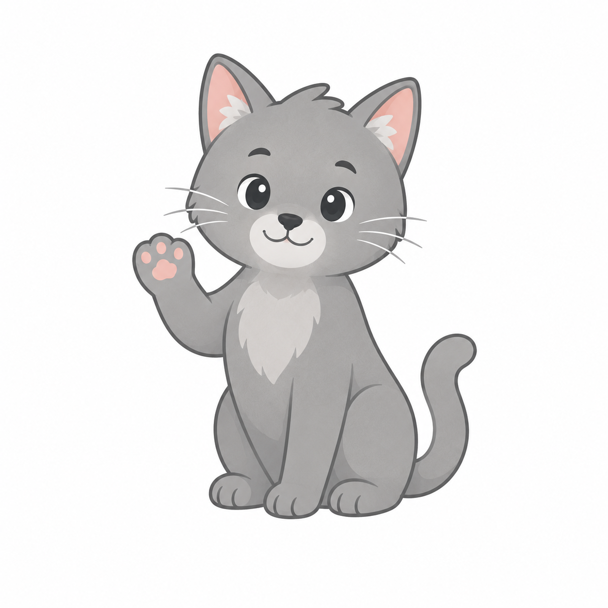

業種・従業員数・経営状況を選ぶだけ。国・県・市あわせて80制度の中から、受給できる可能性のある制度を、金額の目安とともに5分でご案内します。

Step 1法人の種類・業種・従業員数によって、使える補助金の枠が変わります
赤字でも申請できます。状況によっては補助率が上がる場合があります
パート・アルバイトを含む、おおよその金額で大丈夫です
賃上げは多くの補助金の申請条件になっています（医療・介護・福祉系は免除枠あり）
当てはまるものをすべて選択してください（複数OK）
Q14で選んだ内容に応じた選択肢が表示されます。当てはまるものをすべて選んでください
※補助金は原則、交付決定前の契約・発注は対象外
ここで採択率が変わります。まだ準備できていなくても、結果画面で案内します
国の主要補助金の申請に必要なアカウントです（無料・取得まで約2週間）
審査で有利になる項目です。なくても大丈夫です